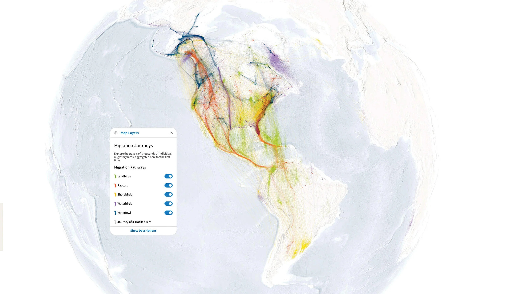
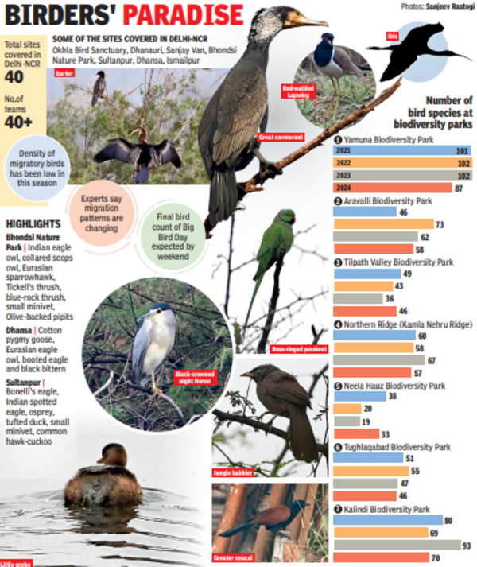
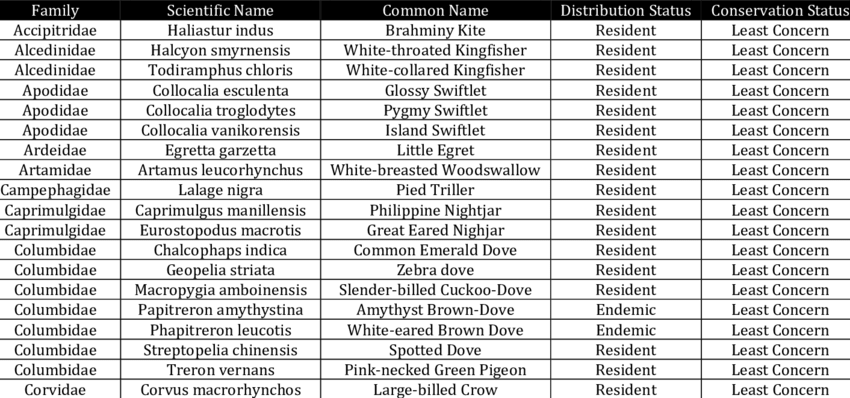
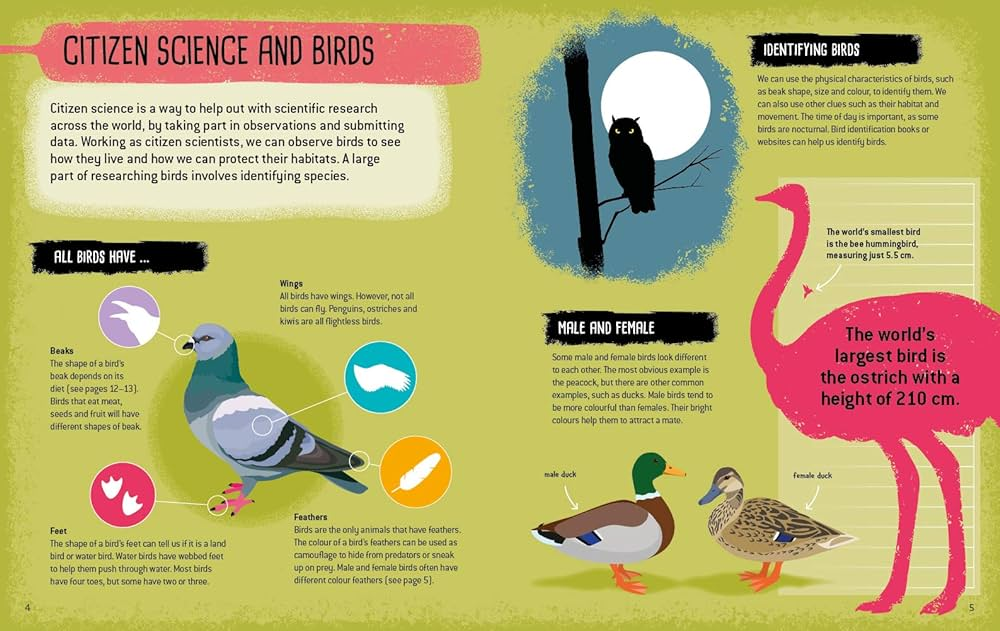

Embark on an exhilarating journey as we follow the epic migrations of birds across the globe. From the icy tundras of the Arctic to the sun-drenched savannahs of Africa, our Migration Tracker Page provides real-time updates on the awe-inspiring journeys of avian travelers as they traverse continents and cross oceans in search of food, breeding grounds, and warmer climates.
|  | Explore our interactive map to track the movements of migratory birds in real-time. Follow the dotted lines as birds embark on their incredible journeys, spanning thousands of miles across diverse landscapes and habitats. Zoom in to see migration routes in detail, and click on individual waypoints to learn more about key stopover sites and breeding grounds. |
|  | Stay up-to-date with seasonal highlights as birds migrate between their breeding and wintering grounds. Discover the best times to witness mass migrations, rare sightings, and other notable events along major flyways around the world. From the spectacle of shorebird migrations along the East Asian-Australasian Flyway to the majestic flights of raptors over the Strait of Gibraltar, our Migration Tracker Page offers insights into the wonders of avian migration. |
|  | Learn about the migratory patterns of different bird species through our comprehensive species profiles. Explore the migration routes, timing, and destinations of iconic migrants such as the Arctic tern, bar-tailed godwit, and ruby-throated hummingbird. Discover how birds navigate vast distances, adapt to changing weather conditions, and overcome obstacles during their perilous journeys. |
|  | Join the global community of citizen scientists and contribute to ongoing research on bird migration. Learn how you can participate in birdwatching events, bird banding programs, and migratory bird counts in your local area. Help scientists track bird populations, monitor migration trends, and conserve critical habitats for migratory birds around the world. |
|
|
Stay informed with the latest migration news and updates from around the world. Follow the journeys of tagged birds, research expeditions, and conservation projects as they unfold in real-time. Be inspired by stories of resilience, discovery, and collaboration as researchers and bird enthusiasts work together to unravel the mysteries of avian migration. |